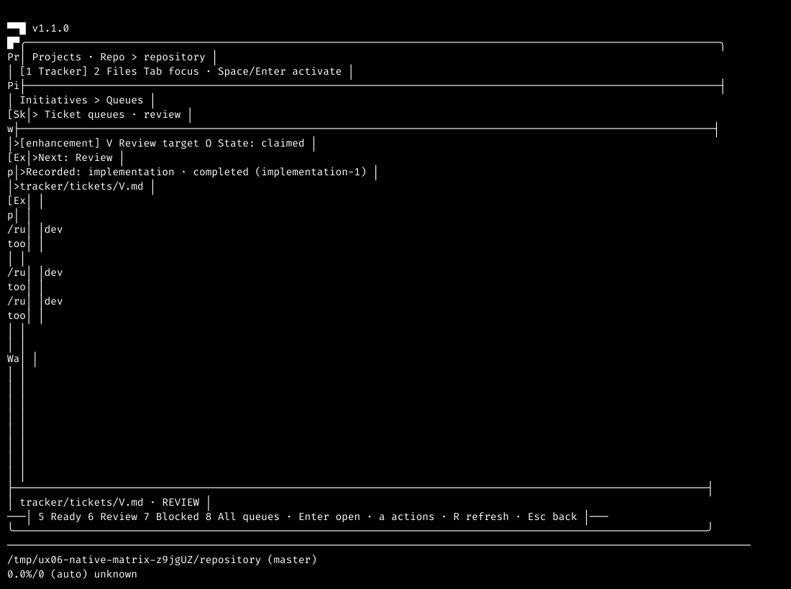
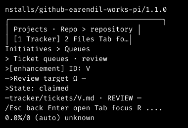
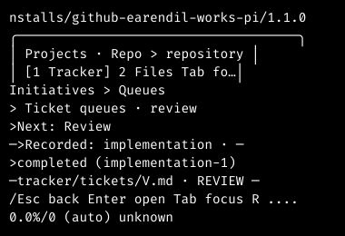
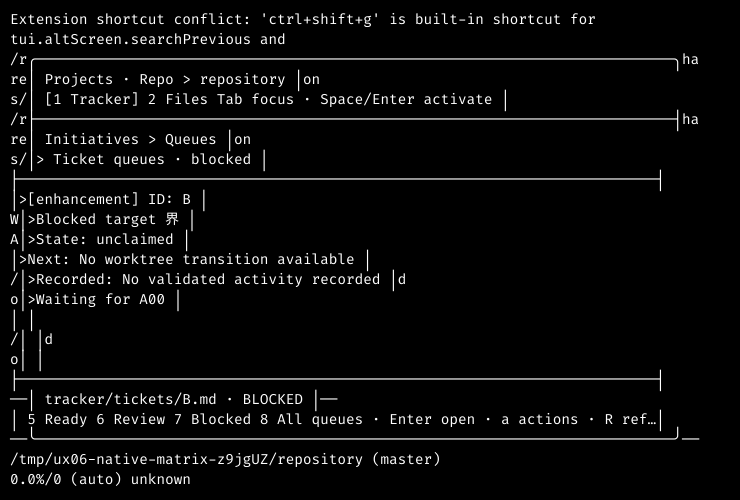
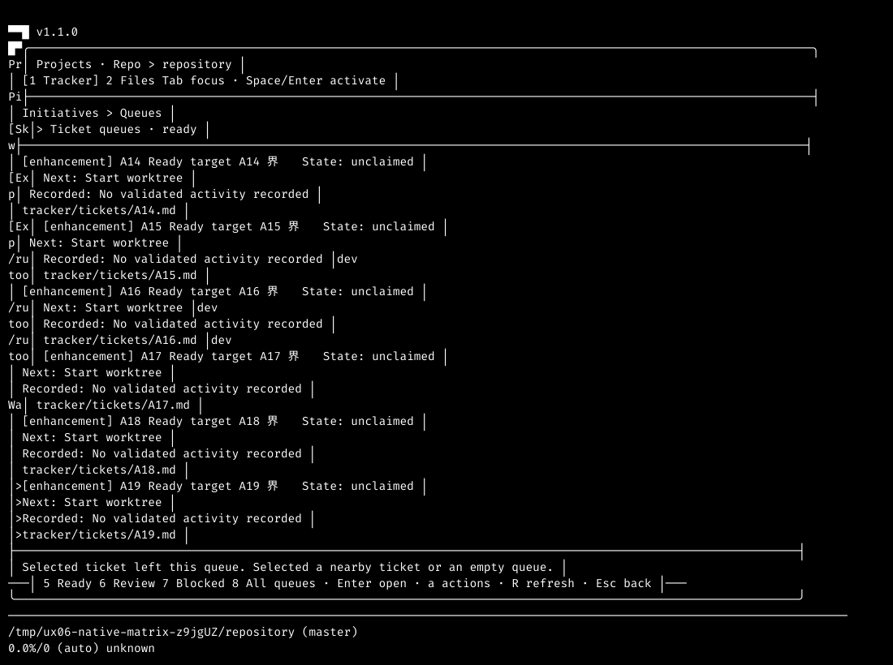
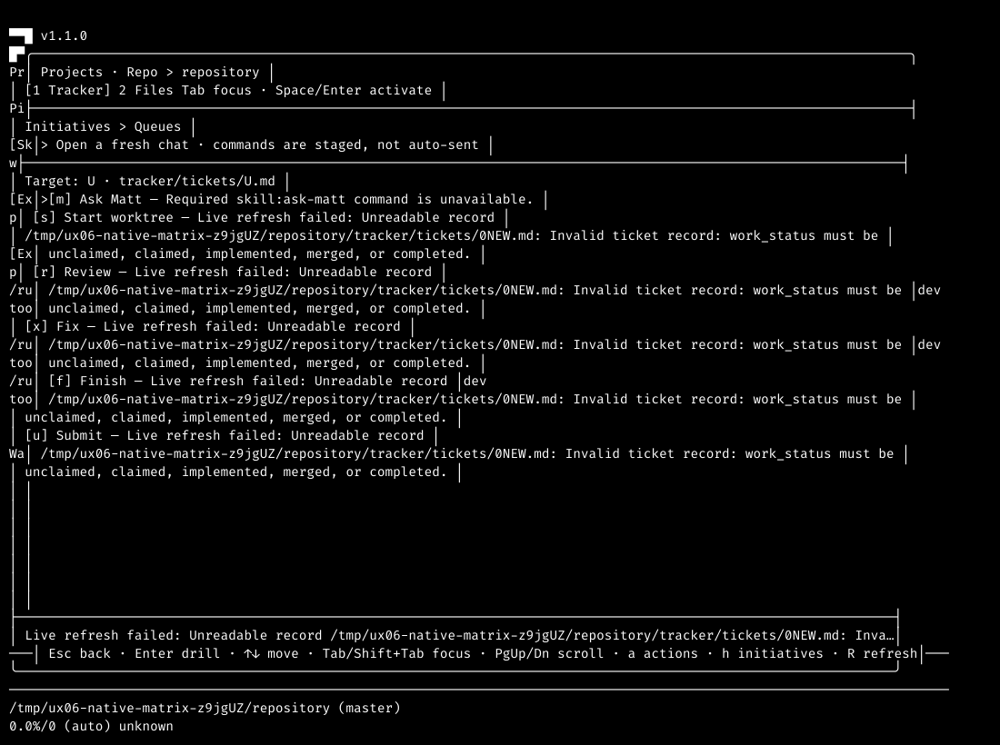
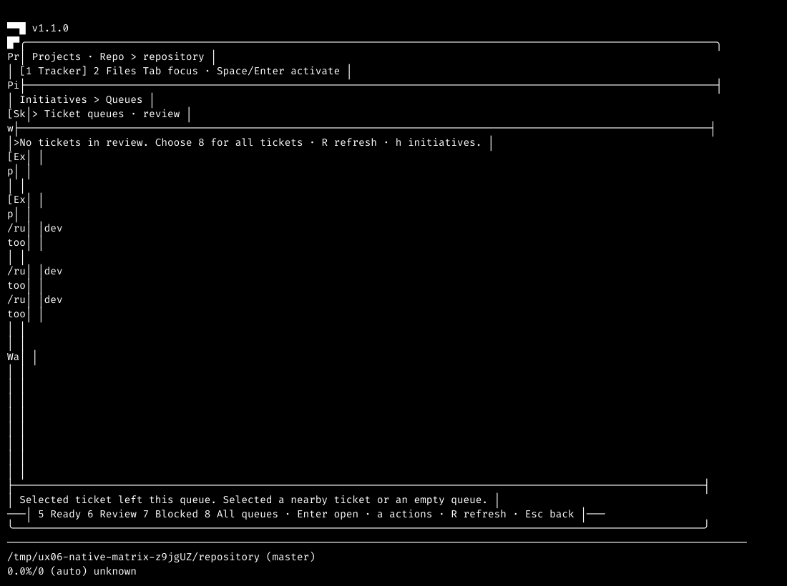

Actual offline Pi 1.1.0 with the production extension, canonical MQ records and a validated implementation receipt. Source 20968ee4f907c6f74bc77702fcef09578b41c6b8; tree 5f64cf06e76dba7e015b9cd54088bc73ae88771f. This report proves exercised UI paths, not independent review or ticket completion.
Ready, Review, Blocked and All ran at 40×12, 80×24 and 120×40 in both themes. At narrow widths, PgDn exposed the remaining fields without changing selection. The complete observation ledger travels in native-matrix.json.




The native run opened canonical V with initiative I and canonical U with Ungrouped context. Esc restored the exact queue screen content. A separately scrolled queue also retained its viewport. Tracker→Files→Tracker retained the queue state. Action inspection identified V and its canonical ticket reference; no workflow command was dispatched.
A real canonical record insertion retained U. Completing U removed it from Ready, explained the departure and selected a different valid action target. An unreadable record retained the last readable rows and disabled unsafe actions with a reason. Restoring the record and refreshing cleared the error.


After the Review ticket completed, the real queue became empty. Pressing a and r did not open target actions or dispatch Review. The recovery hint named the real All input, 8.

A temporary Git repository held real schema-versioned tickets and an initiative, resolved routes, a real Git source tuple and a validated implementation receipt. The registered worktree skill made Review eligibility real. No provider prompt, model inference or workflow dispatch ran in the native harness. The source checkout stayed clean and retained the exact commit and tree before and after observation.
The recorded full suite passed 152 tests with 2145 assertions across 13 files; the scoped compiler exited 0. Only the existing README changed after those runtime checks. The final-source native matrix then ran on the documentation commit itself. The docs session consumed 43280 whole-session work tokens including its final reply, not only its native goal meter.
Both fixture Pi processes exited 0. Temporary repository, home and config roots were removed and checked absent. Durable evidence remains. The owned source worktree, review workspace, nine ignored worktree dependency links and one ignored primary TypeScript link remain available for the pending reviews and finish. They use the existing dependency cache. Canonical tracker claim and status remain unchanged.